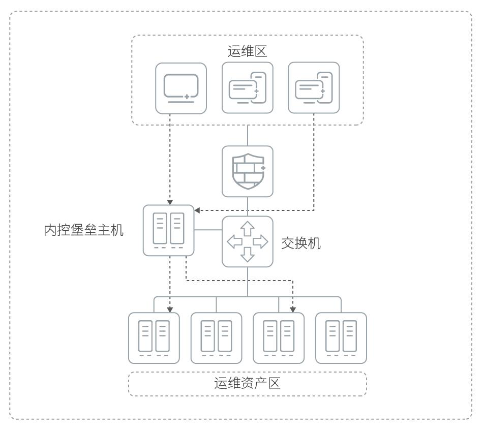

产品概述
赛博特安运维安全网关系统采用“物理旁路，逻辑串联”的模式，不改变网络拓扑结构，无需在终端安装客户端软件，不改变管理员、运维人员的操作习惯，不影响正常业务运行。用户从portal页面单点登录，进行协议代理，代替用户连接到运维设备，进行实施的访问控制和审计记录。审计人员可以实时审计或者事后进行录像回放查看操作记录。
应用价值
赛博特安运维安全网关系统（NABH）为高端行业用户解决IT运维管理和IT内控外审的问题而设计。它将众多管理员账号（主账号）和设备的账号（从账号）进行统一管理，在管理员进行运维操作的同时，赛博特安统一身份管理系统会对其操作行为进行访问控制，对全程运维行为进行记录、分析和展现，帮助用户规范运维管理流程，提高运维效率，完善责任认定体系。
产品亮点
多协议支持，有效提高运维效率
全面支持主流的运维协议Telnet、SSH、FTP/SFTP等，可以对每个字符进行详细审计和过滤控制。
同时实现了多平台的多种图形终端操作的审计，如RDP、XWindow、VNC等方式图形终端操作。各种操作系统、主流数据库、网络设备、Web应用系统及中间件皆可以通过赛博特安统一身份管理系统来实现命令级的运维审计，对于CS/BS类应用协议，赛博特安开放登录流程编辑工具，可实现大多数应用协议密码代填无需定制，在赛博特安统一身份管理系统进行全部设备托管后即可通过单点登录进行密码代填，大大提高运维效率。
精细的访问控制，有效降低操作风险
赛博特安运维安全网关系统可以根据时间、IP、命令黑白名单、用户组、服务器组、角色等对运维管理员进行精细的实时访问控制。同时支持双人复核授权流程，外包运维人员登录设备和输入关键命令时，需要高权限运维人员复合才能进行，此功能特别适用于有运维外包的大型企业。
准确的操作还原，便捷的事后取证
赛博特安运维安全网关系统采用操作还原技术将操作流程自动的展现，能够监控用户的每一次行为，并判定该行为是否对企业内部网络安全造成危害。操作还原功能有效地降低了恶意操作的可能性。一次登录，全网畅通，有效提高工作效率；多因素认证手段，有效提高整体运维安全性；细粒度访问控制功能保证权限最小化原则实施；实时审计/录像回放有效控制操作风险双人复核管理流程，有效监控代维人员；符合IT内控审计要求，确保法律法规遵从。
应用场景
